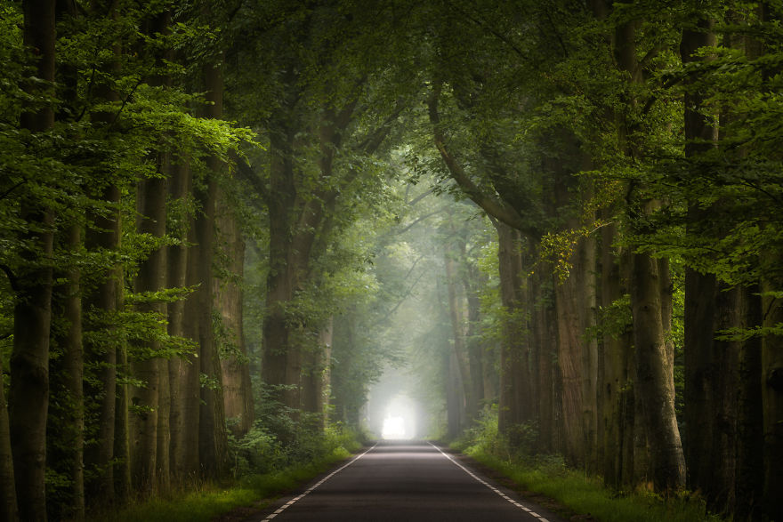
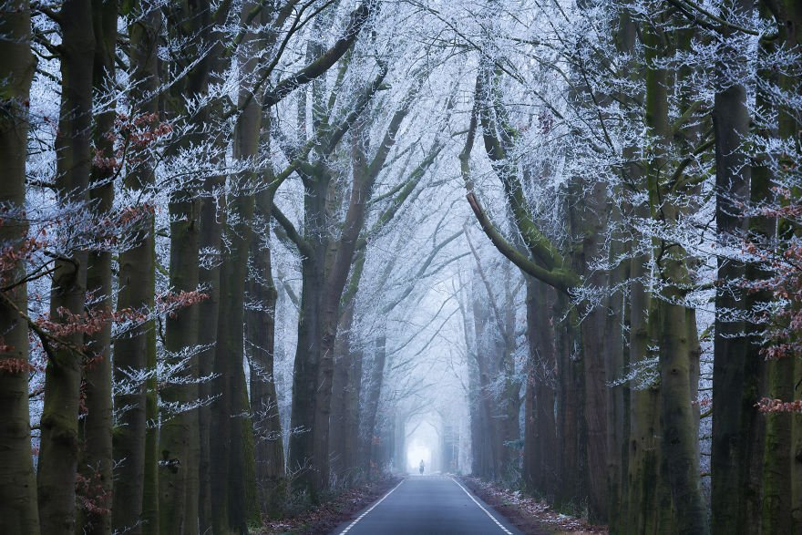

Primavera
En México la estación primaveral comienza el día 20 de marzo y finaliza el 21 de junio. La primavera en México es la transición entre el frío del invierno y el calor del verano. Las temperaturas durante esta estación pueden oscilar entre los 30 y 40 grados centígrados al acercarse a la estación veraniega, predomina un clima seco y cálido.
Verano
La estación veraniega en México comienza el día 21 de junio y puede finalizar el 23 de septiembre. La estación se caracteriza por ser altamente calurosa durante las horas del día. Las temperaturas pueden llegar a oscilar entre los 38 grados y, en ocasiones, puede llegar a llover durante las tardes y las noches en diversas regiones del territorio mexicano. La humedad predomina en esta estación, sin embargo, las temperaturas promedio y el clima dependen igualmente de la región o estado en el que se viva.
Otoño
La estación de otoño en México comienza el 23 de septiembre y finaliza el 21 de diciembre. En México, la estación otoñal es la más corta, el clima es predominantemente seco, aunque al principio de la temporada suelen aumentar las lluvias debido a la influencia de ciclones tropicales. En otoño el clima es fresco y agradable, las temperaturas suelen descender durante las horas de la noche y la cantidad de horas de duración de la luz solar son iguales a las horas de la noche. Asimismo, la temperatura durante esta estación es considerada como una de las más agradables.
Invierno
El invierno mexicano comienza a partir del 21 de diciembre hasta el 20 de marzo. El clima se torna frío y las temperaturas pueden llegar a estar en los 0 grados en algunas regiones del país. Es una estación con pocas lluvias. En las zonas cercanas a las costas, las temperaturas varían de cálidas a bajas debido a la temperatura del océano y el vapor de agua del mar. En las regiones centrales las temperaturas llegan a ser bastante bajas, especialmente en las horas de la noche y la madrugada.